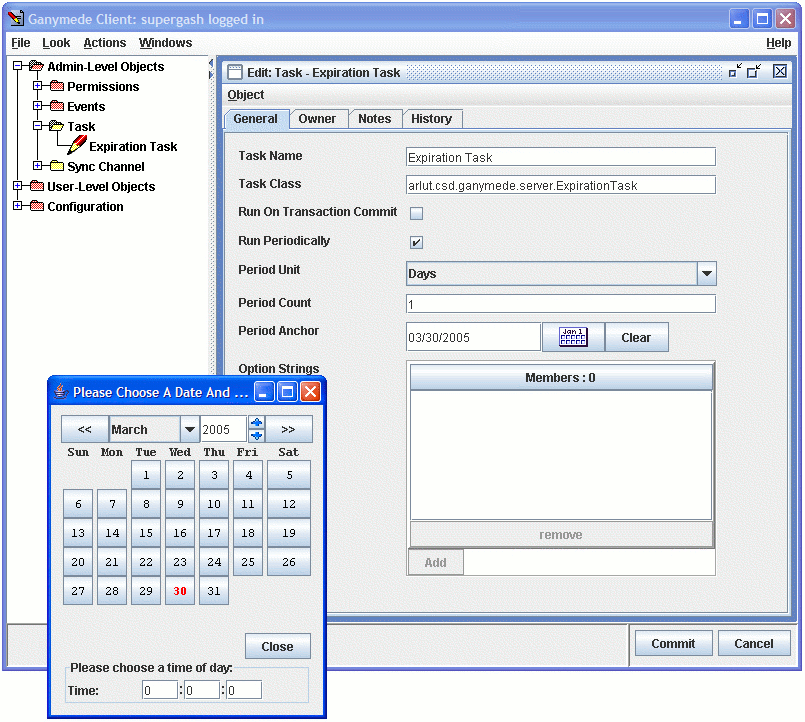

The Ganymede server is the heart of the Ganymede system. The server was designed from the ground up to provide high performance, high availability, intelligent management of network schema objects.
In the sections below, we discuss the primary design attributes of the server.
Object Store |
The Ganymede server has a built-in object database implemented using Java hashtables. This gives the server good performance and multi-threaded safety at the cost of a potentially quite large RAM footprint. All objects managed by Ganymede are kept in memory while the Ganymede server is running.
All objects in the database are identified by a type number/object number pair called an invid, for Invariant ID. All objects in the database are of a single type (i.e., there is no type inheritance), and each object type has its own set of fields defined in the schema, and may be associated with a Java plug-in class to provide intelligent management of objects of that type. See the DBEditObject subclassing guide for details on the use of object management plug-ins in customizing the Ganymede server.
Because the invid is the sine qua non of the object storage system, it defines how many objects can be stored in the Ganymede server. There can be up to 32,767 different types of objects held in the server, and for each type there can be up to 2 billion separate objects stored. The server is designed never to re-use object id's, so that log files can be kept indefinitely that can unambiguously track a specific user across the lifetime of the server. If 2 billion objects of a type is too small a number, you probably shouldn't be using Ganymede. ;-) In any case, you are likely to run into performance problems with the RAM based object store long before then.
The Ganymede server currently supports nine basic field data types, including:
of these, String, IP address, and Object Reference fields can be defined to be vectors, holding up to 32k values. All other field types can only be stored one per field.
The Object Reference type is used throughout Ganymede to link objects together. All objects are symmetrically linked, so that the database can be kept up-to-date whenever objects are deleted without having to do a time-consuming sweep of the database. All object references that the user sees in the client are maintained by these object references, making it possible to rename objects at any time without disrupting links.
Some object reference fields are 'edit-in-place', which means that the objects referenced by that field are particularly closely bound to the referencing object.An object type must be designated as an 'edit-in-place' or embedded object in order to be referenced by an edit-in-place object reference field. These embedded objects are treated by the server as being contained within the object referencing them. An embedded object has a unique parent, and can only be embedded into a single object at a time. This mechanism is used whenever the needs of a particular schema design can not be met by a simple set of atomic fields.
Transaction Support |
The Ganymede server is built around a transactional model wherein clients connected to the server check-out objects for editing. There may be many clients connected to the server simultaneously, but changes made to objects in one transaction will not be visible to other users until the transaction is committed. In addition, queries issued by clients are guaranteed to be atomic with respect to transactions across the duration of their processing.
As transactions are committed, they are recorded in a journal file. This journal file allows the server to recover any transactions that were committed between the time that the server last performed a full database dump and an abnormal shutdown. Thus, the server is resistant to errors occurring due to a power failure or server crash.
The transaction commit model is based on two-phase commit logic, enabling custom code to connect transactions issued in Ganymede to external databases to maintain cross-database consistency.
When transactions are committed, the Ganymede scheduler schedules the external build process for execution. If multiple transactions are committed while the Ganymede scheduler is still executing the previous external build, the Ganymede scheduler will simply initiate another external build when the first build completes. Thus, multiple transactions made by users may be propagated to the external environment in bulk, depending on the rate that transactions are committed and the time necessary to complete an external build.
Permissions and ownership management |
See the permissions document for a discussion of the Ganymede permissions and ownership model.
Schema editing |
The server has built-in support for redefining the object type/field schema. See the customization document for a preliminary discussion of the schema editor and the customization possibilities provided by the server.
Client communications |
The Ganymede system depends on the Java RMI system for all client/server communications. All services provided by the Ganymede server to its clients are provided over RMI. The Ganymede server is capable of returning custom dialogs to the client, either for simple error messages, or as part of a wizard dialog sequence. In addition, after most operations, the server has the option of returning to the client a list of objects and fields that need to be refreshed. The server object linking code uses this ability to keep client windows synchronized with changes made that affect multiple objects.
Server Tasks |
The Ganymede server has a built-in cron-like facility for scheduling various tasks. As of release 0.97, Ganymede adopters can register tasks for execution on demand from the admin console, on periodic intervals, and on transaction commit. These transactional commit-time tasks emit source files and run scripts on the computer hosting the server to propagate changes to the NIS and DNS maps into the network environment.
Tasks are registered with the Ganymede Scheduler by creating and editing Task objects in the database, under 'Admin-Level Objects'. Each task object has the following fields availble:
| Field Name | Field Type | Description |
|---|---|---|
| Task Name | String | The name of the task, as it appears in the admin console's task monitor. |
| Task Class | String | The fully package-qualified class name for the Runnable task to be registered in the server. The class named must be available to the server via its CLASSPATH. |
| Run On Transaction Commit | Boolean | If this box is checked, the server will run this task whenever transactions are committed in the server. This option is mutually exclusive with the 'Run Periodically' checkbox. |
| Run Periodically | Boolean | If this box is checked, the server will run this task at regular intervals. This option is mutually exclusive with the 'Run On Transaction Commit' checkbox. |
| Period Unit | String | This field can have a value of 'Minutes', 'Hours', 'Days', or 'Weeks', and is used along with Period Count to determine how often to run the task. |
| Period Count | Numeric | This field is used to indicate how many period units should pass between invocations of this task. If this field is not set, it will be treated as 1. |
| Period Anchor | Date | This field is used to set an anchor for periodic tasks. When the anchor is set, the server will
first run the registered task at the next even multiple of (period count * period unit) after or before
the anchor date that occurs after the server's start up. In other words, if you have a task set to run once a day, and you set the period anchor to noon on some random day, the server will run the task every day at noon. If the Period Anchor is not set on a periodic task, the anchor is set to the server's startup time, and the task will be first run (period count * period unit) after startup. |
Here is an example of a registered periodic task, set to run every day at midnight:
By default, a Ganymede 0.97 server comes with the following tasks pre-registered:
Note that the 'Run On Transaction Commit' and 'Run Periodically' check boxes are mutually exclusive choices. You can choose to select neither, in which case the task will simply be available for manual execution from the admin console's task table.
For tasks with 'Run Periodically' checked, the server uses the Period Unit and Period Counter to determine how often to schedule the task, and the Period Anchor to determine the time of day and week to base the task interval on. If you have set the task to run once a day and have set a Period Anchor of midnight on any date, that task will run each day at midnight. If you have set the Period Anchor to midnight on a Monday and have set the Period Unit to 'Weeks', the server will run the task on Mondays at midnight. If Period Count is set to 2, the task will run every other Monday at midnight.
If you don't set the Period Anchor for a periodically run task, the server will calculate the task intervals from the server start time. In the above list, the Database Dumper Task will first be run 2 hours from the server's start, and every 2 hours thereafter.